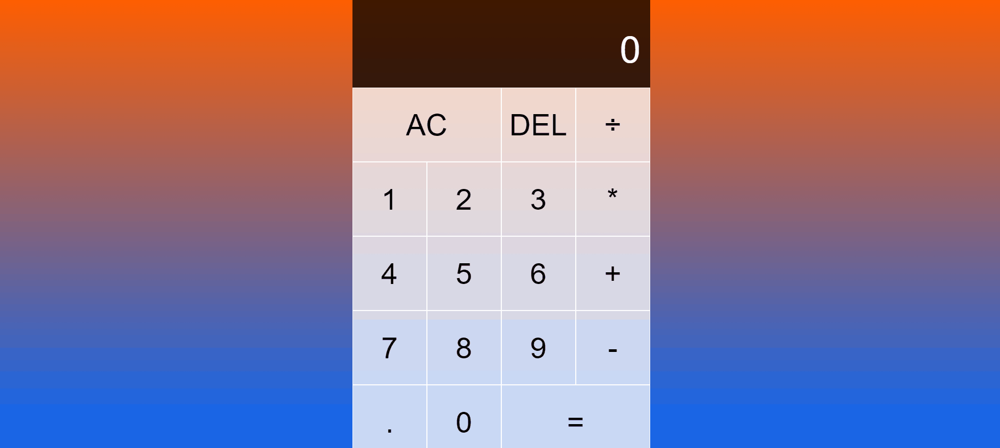

Portfolio
View some of my recent work


Games Info
Games database app built using Angular 11 and public API for data.


Tic Tac Toe
A Tic Tac Toe app built using pure Javascript with light/dark mode.


Calculator
A Simple Calculator App built with Pure Javascript and Grid CSS.

Tasker
A Simple Task Manager App built using React 17, JSON server.